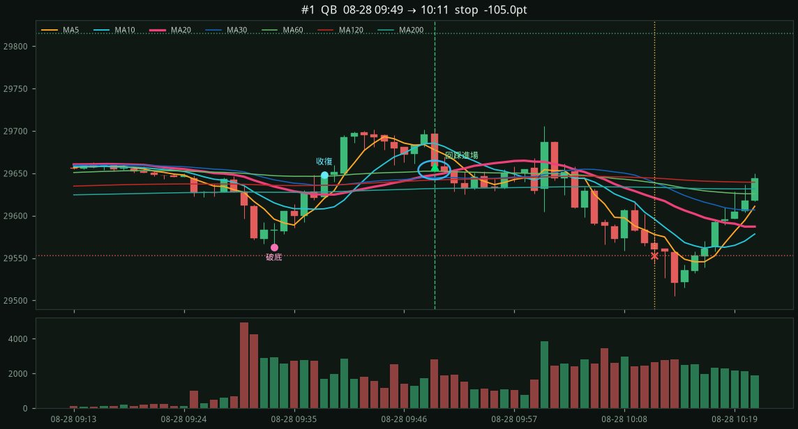
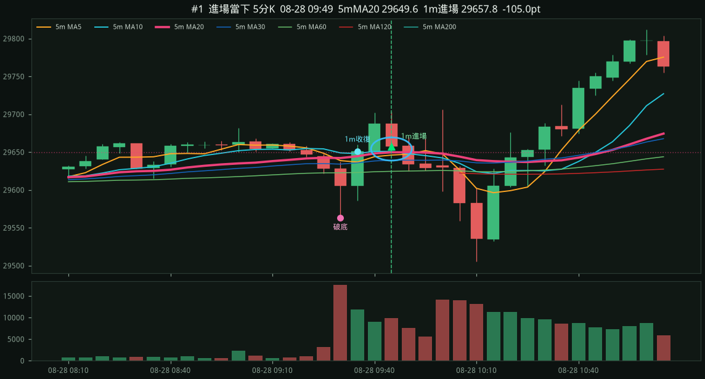
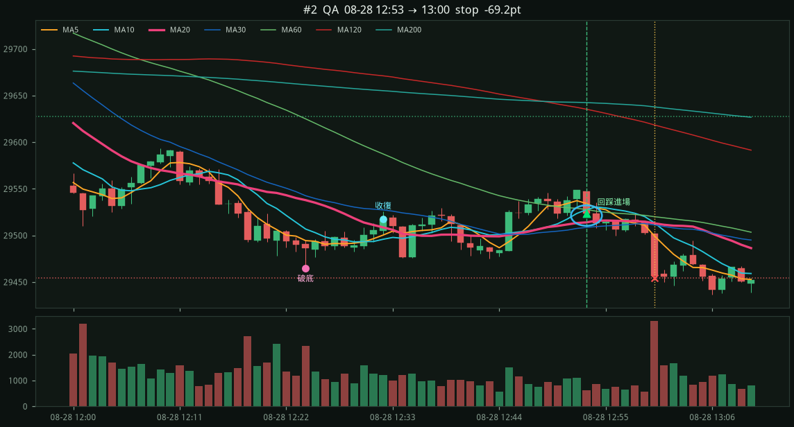
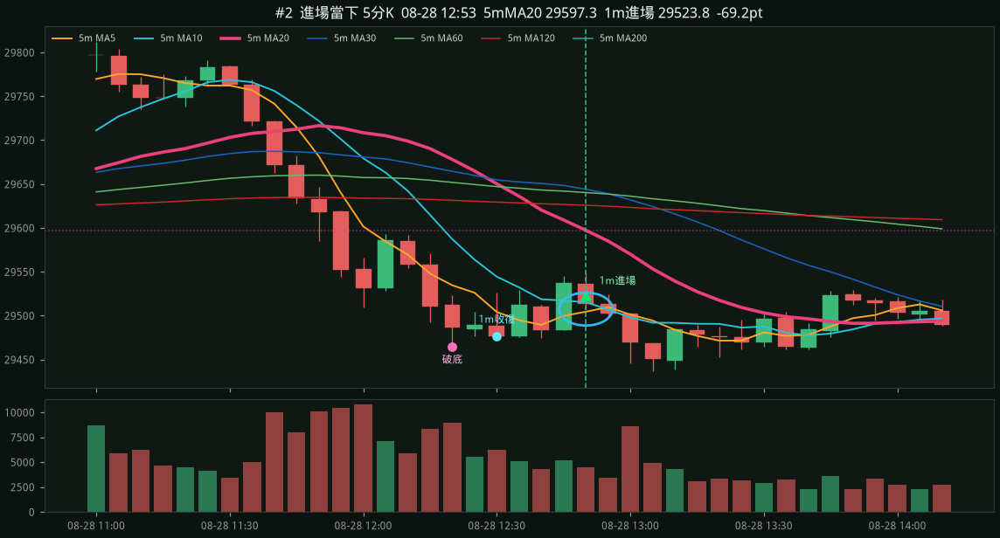
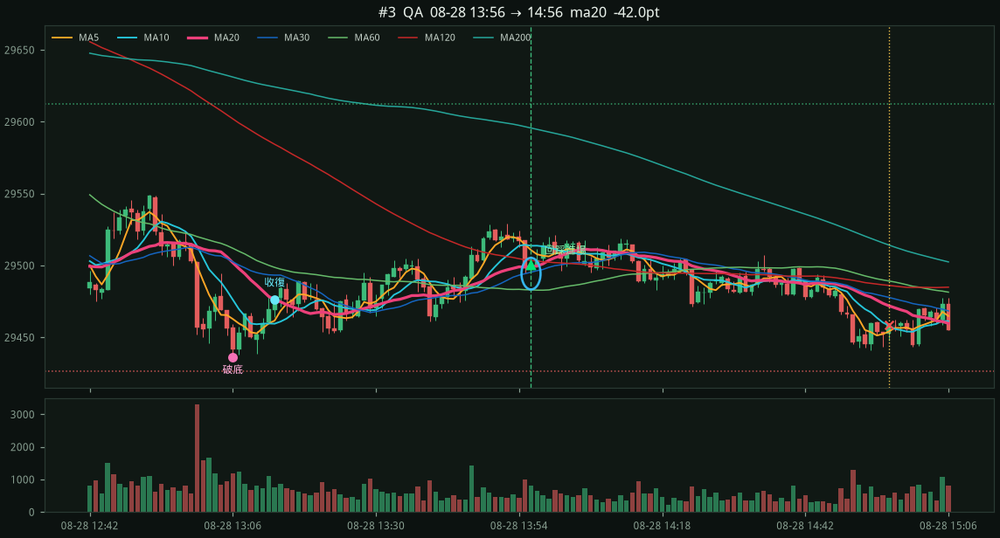
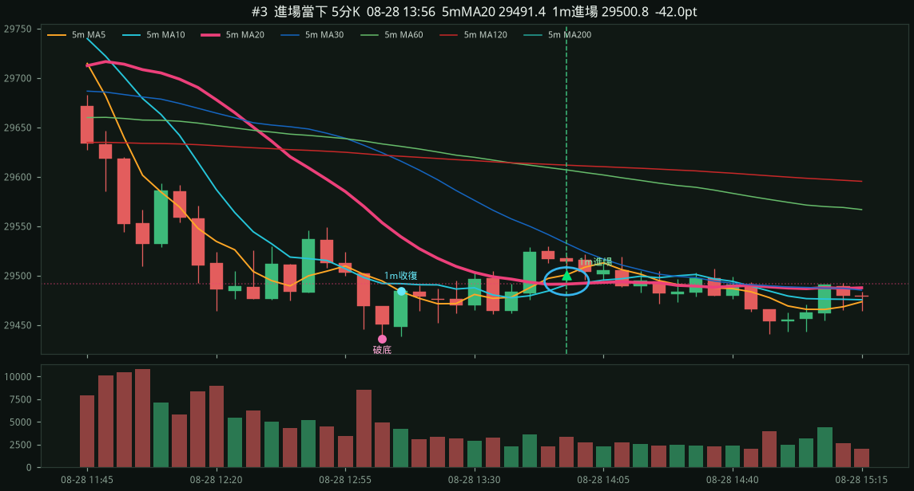
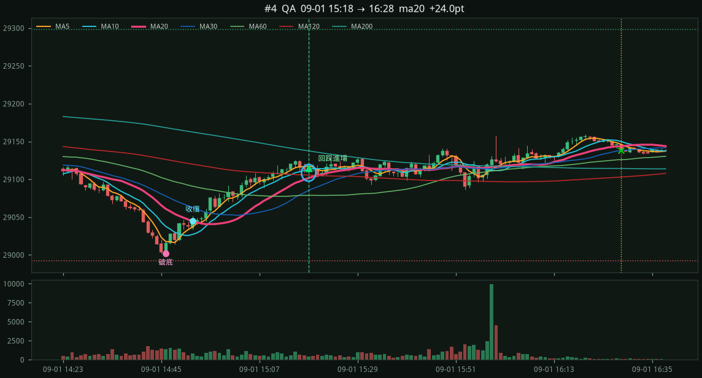
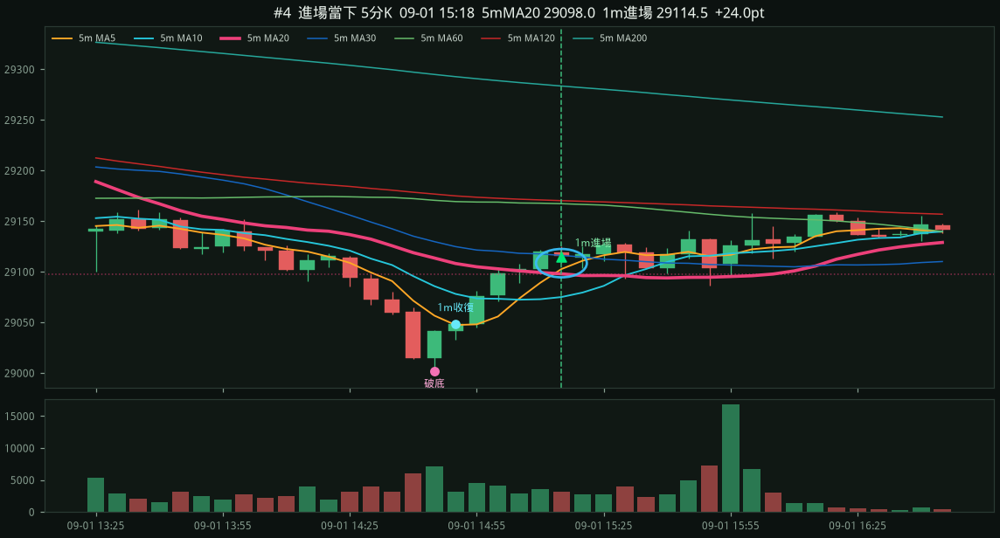

NQ=F 1m 破翻回踩 MA20
只做日盤 09:30–15:45 ET。破底 → 收復粉紅 MA20（約 20 分鐘）→ 離開後回踩進場。停損在破底下方，目標 1.5R；持有滿 60 根若收破 MA20 出場。進場若貼著下彎的 5m MA60（40 點內），或夾在下彎空頭排列的 5m MA20/MA30 蓋頭底下（45 點內），則略過。 每筆附進場當下五分 K 對照。
7d · 2026-08-28 00:09 → 2026-09-04 06:11 ET · bars=7107
筆數4
勝率25.0%
總點數-192.2
勝/負1/3
QA 3筆 -87.2 · QB 1筆 -105.0
漏斗：破底 216 → 深度夠 23 → 收復MA20 23 → 回踩 9 → 進場 4（沒離開 1 · 沒收復 0 · 沒守住 0 · 風險 0 · 貼下彎5mMA60 0 · 貼下彎5mMA20/30蓋頭 1 · 時段 3）
stop1m回踩MA20QB5m對照
entry 29657.75 （回踩 1m MA20 29648.00）
stop 29552.75 (−105.0 pts，破底下方）
target 29815.25 (1.5R)
exit 29552.75 stop
破底 08-28 09:33 low 29562.75 / 2h低 29596.75
收復 09:38 → 回踩 09:49
MA5 29677.9 / MA10 29685.6 / MA20 29648.0 / MA60 29652.5
5m MA20 29646.4 上彎 +9.9 （進場 − 5mMA20 = +11.3）
5m MA30 29636.8 上彎 +6.5 （進場 − 5mMA30 = +20.9）
5m MA60 29622.9 上彎 +3.2 （進場 − 5mMA60 = +34.8）
1m K

進場當下 5分K（粉紅 = 5m MA20）

stop1m回踩MA20QA5m對照
entry 29523.75 （回踩 1m MA20 29513.92）
stop 29454.50 (−69.2 pts，破底下方）
target 29627.62 (1.5R)
exit 29454.50 stop
破底 08-28 12:24 low 29464.50 / 2h低 29509.75
收復 12:32 → 回踩 12:53
MA5 29534.2 / MA10 29527.6 / MA20 29513.9 / MA60 29527.7
5m MA20 29608.9 下彎 -79.6 （進場 − 5mMA20 = -85.1）
5m MA30 29649.1 下彎 -20.1 （進場 − 5mMA30 = -125.3）
5m MA60 29642.1 下彎 -11.3 （進場 − 5mMA60 = -118.4）
1m K

進場當下 5分K（粉紅 = 5m MA20）

ma201m回踩MA20QA5m對照
entry 29500.75 （回踩 1m MA20 29498.92）
stop 29426.25 (−74.5 pts，破底下方）
target 29612.50 (1.5R)
exit 29458.75 ma20
破底 08-28 13:06 low 29436.25 / 2h低 29464.50
收復 13:13 → 回踩 13:56
MA5 29510.7 / MA10 29513.7 / MA20 29498.9 / MA60 29483.0
5m MA20 29489.5 下彎 -23.6 （進場 − 5mMA20 = +11.3）
5m MA30 29537.0 下彎 -57.4 （進場 − 5mMA30 = -36.3）
5m MA60 29608.6 下彎 -15.3 （進場 − 5mMA60 = -107.8）
1m K

進場當下 5分K（粉紅 = 5m MA20）

ma201m回踩MA20QA5m對照
entry 29114.50 （回踩 1m MA20 29101.58）
stop 28992.00 (−122.5 pts，破底下方）
target 29298.25 (1.5R)
exit 29138.50 ma20
破底 09-01 14:46 low 29002.00 / 2h低 29058.00
收復 14:52 → 回踩 15:18
MA5 29117.2 / MA10 29112.9 / MA20 29101.6 / MA60 29078.7
5m MA20 29098.4 下彎 -18.7 （進場 − 5mMA20 = +16.1）
5m MA30 29117.4 下彎 -15.5 （進場 − 5mMA30 = -2.9）
5m MA60 29167.8 下彎 -5.0 （進場 − 5mMA60 = -53.3）
1m K

進場當下 5分K（粉紅 = 5m MA20）
